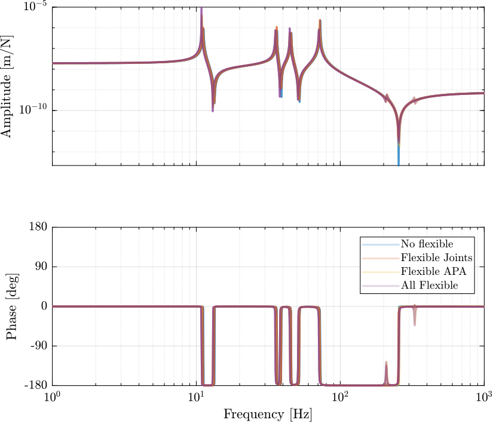
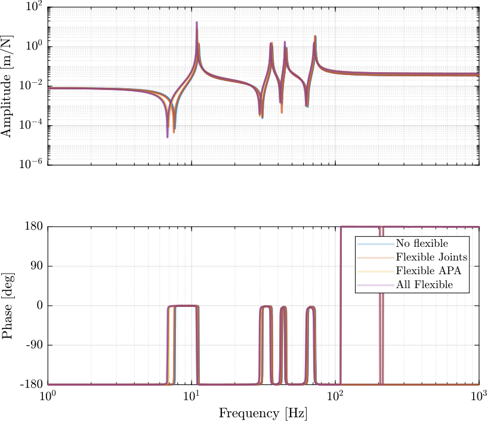

Stewart Platform with Flexible Elements
Table of Contents
1 Simscape Model
1.1 Flexible APA
apa = load('./mat/APA300ML.mat', 'int_xyz', 'int_i', 'n_xyz', 'n_i', 'nodes', 'M', 'K');
| Total number of Nodes | 7 |
| Number of interface Nodes | 7 |
| Number of Modes | 6 |
| Size of M and K matrices | 48 |
| Node i | Node Number | x [m] | y [m] | z [m] |
|---|---|---|---|---|
| 1.0 | 53917.0 | 0.0 | -0.015 | 0.0 |
| 2.0 | 53918.0 | 0.0 | 0.015 | 0.0 |
| 3.0 | 53919.0 | -0.0325 | 0.0 | 0.0 |
| 4.0 | 53920.0 | -0.0125 | 0.0 | 0.0 |
| 5.0 | 53921.0 | -0.0075 | 0.0 | 0.0 |
| 6.0 | 53922.0 | 0.0125 | 0.0 | 0.0 |
| 7.0 | 53923.0 | 0.0325 | 0.0 | 0.0 |
1.2 Flexible Joint
flex_joint = load('./mat/flexor_ID16.mat', 'int_xyz', 'int_i', 'n_xyz', 'n_i', 'nodes', 'M', 'K');
| Total number of Nodes | 2 |
| Number of interface Nodes | 2 |
| Number of Modes | 6 |
| Size of M and K matrices | 18 |
| Node i | Node Number | x [m] | y [m] | z [m] |
|---|---|---|---|---|
| 1.0 | 181278.0 | 0.0 | 0.0 | 0.0 |
| 2.0 | 181279.0 | 0.0 | 0.0 | -0.0 |
| Caracteristic | Value |
|---|---|
| Axial Stiffness [N/um] | 119 |
| Bending Stiffness [Nm/rad] | 33 |
| Bending Stiffness [Nm/rad] | 33 |
| Torsion Stiffness [Nm/rad] | 236 |
1.3 Identification
And we identify the dynamics from force actuators to force sensors.
%% Options for Linearized options = linearizeOptions; options.SampleTime = 0; %% Name of the Simulink File mdl = 'stewart_platform_model'; %% Input/Output definition clear io; io_i = 1; io(io_i) = linio([mdl, '/Controller'], 1, 'openinput'); io_i = io_i + 1; % Actuator Force Inputs [N] io(io_i) = linio([mdl, '/Stewart Platform'], 1, 'openoutput', [], 'dLm'); io_i = io_i + 1; % Relative Displacement Outputs [m] io(io_i) = linio([mdl, '/Stewart Platform'], 1, 'openoutput', [], 'Taum'); io_i = io_i + 1; % Force Sensors [N]
ground = initializeGround('type', 'none');
payload = initializePayload('type', 'rigid', 'm', 50);
controller = initializeController('type', 'open-loop');
disturbances = initializeDisturbances(); references = initializeReferences(stewart);
1.4 No Flexible Elements
stewart = initializeStewartPlatform(); stewart = initializeFramesPositions(stewart); stewart = generateGeneralConfiguration(stewart); stewart = computeJointsPose(stewart); % stewart = initializeStrutDynamics(stewart, 'K', 1.8e6*ones(6,1)); stewart = initializeAmplifiedStrutDynamics(stewart, 'Kr', 0.9e6*ones(6,1), 'Ka', 0.9e6*ones(6,1)); stewart = initializeJointDynamics(stewart, 'Kf_M', 33*ones(6,1), 'Kt_M', 235*ones(6,1), 'Kf_F', 33*ones(6,1), 'Kt_F', 235*ones(6,1)); stewart = initializeCylindricalPlatforms(stewart); stewart = initializeCylindricalStruts(stewart); stewart = computeJacobian(stewart); stewart = initializeStewartPose(stewart); stewart = initializeInertialSensor(stewart);
%% Run the linearization
G = linearize(mdl, io, options);
G.InputName = {'F1', 'F2', 'F3', 'F4', 'F5', 'F6'};
G.OutputName = {'Dm1', 'Dm2', 'Dm3', 'Dm4', 'Dm5', 'Dm6', 'Fm1', 'Fm2', 'Fm3', 'Fm4', 'Fm5', 'Fm6'};
1.5 Flexible joints
stewart = initializeStewartPlatform(); stewart = initializeFramesPositions(stewart); stewart = generateGeneralConfiguration(stewart); stewart = computeJointsPose(stewart); stewart = initializeAmplifiedStrutDynamics(stewart, 'Kr', 0.9e6*ones(6,1), 'Ka', 0.9e6*ones(6,1)); stewart = initializeJointDynamics(stewart, 'type_F', 'flexible', 'K_F', flex_joint.K, 'M_F', flex_joint.M, 'n_xyz_F', flex_joint.n_xyz, 'xi_F', 0.1, 'step_file_F', 'mat/flexor_ID16.STEP', 'type_M', 'flexible', 'K_M', flex_joint.K, 'M_M', flex_joint.M, 'n_xyz_M', flex_joint.n_xyz, 'xi_M', 0.1, 'step_file_M', 'mat/flexor_ID16.STEP'); stewart = initializeCylindricalPlatforms(stewart); stewart = initializeCylindricalStruts(stewart); stewart = computeJacobian(stewart); stewart = initializeStewartPose(stewart); stewart = initializeInertialSensor(stewart);
%% Run the linearization
Gj = linearize(mdl, io, options);
Gj.InputName = {'F1', 'F2', 'F3', 'F4', 'F5', 'F6'};
Gj.OutputName = {'Dm1', 'Dm2', 'Dm3', 'Dm4', 'Dm5', 'Dm6', 'Fm1', 'Fm2', 'Fm3', 'Fm4', 'Fm5', 'Fm6'};
1.6 Flexible APA
stewart = initializeStewartPlatform(); stewart = initializeFramesPositions(stewart); stewart = generateGeneralConfiguration(stewart); stewart = computeJointsPose(stewart); stewart = initializeFlexibleStrutDynamics(stewart, 'H', 0.03, 'K', apa.K, 'M', apa.M, 'n_xyz', apa.n_xyz, 'xi', 0.1, 'step_file', 'mat/APA300ML.STEP'); stewart = initializeJointDynamics(stewart, 'Kf_M', 33*ones(6,1), 'Kt_M', 235, 'Kf_F', 33*ones(6,1), 'Kt_F', 235); stewart = initializeCylindricalPlatforms(stewart); stewart = initializeCylindricalStruts(stewart, 'type_F', 'none', 'type_M', 'none'); stewart = computeJacobian(stewart); stewart = initializeStewartPose(stewart); stewart = initializeInertialSensor(stewart);
%% Run the linearization
Ga = -linearize(mdl, io, options);
Ga.InputName = {'F1', 'F2', 'F3', 'F4', 'F5', 'F6'};
Ga.OutputName = {'Dm1', 'Dm2', 'Dm3', 'Dm4', 'Dm5', 'Dm6', 'Fm1', 'Fm2', 'Fm3', 'Fm4', 'Fm5', 'Fm6'};
1.7 Flexible Joints and APA
stewart = initializeStewartPlatform(); stewart = initializeFramesPositions(stewart); stewart = generateGeneralConfiguration(stewart); stewart = computeJointsPose(stewart); stewart = initializeFlexibleStrutDynamics(stewart, 'H', 0.03, 'K', apa.K, 'M', apa.M, 'n_xyz', apa.n_xyz, 'xi', 0.1, 'step_file', 'mat/APA300ML.STEP'); stewart = initializeJointDynamics(stewart, 'type_F', 'flexible', 'K_F', flex_joint.K, 'M_F', flex_joint.M, 'n_xyz_F', flex_joint.n_xyz, 'xi_F', 0.1, 'step_file_F', 'mat/flexor_ID16.STEP', 'type_M', 'flexible', 'K_M', flex_joint.K, 'M_M', flex_joint.M, 'n_xyz_M', flex_joint.n_xyz, 'xi_M', 0.1, 'step_file_M', 'mat/flexor_ID16.STEP'); stewart = initializeCylindricalPlatforms(stewart); stewart = initializeCylindricalStruts(stewart, 'type_F', 'none', 'type_M', 'none'); stewart = computeJacobian(stewart); stewart = initializeStewartPose(stewart); stewart = initializeInertialSensor(stewart);
Gf = -linearize(mdl, io, options);
Gf.InputName = {'F1', 'F2', 'F3', 'F4', 'F5', 'F6'};
Gf.OutputName = {'Dm1', 'Dm2', 'Dm3', 'Dm4', 'Dm5', 'Dm6', 'Fm1', 'Fm2', 'Fm3', 'Fm4', 'Fm5', 'Fm6'};
1.8 Direct Velocity Feedback

Figure 1: Change of the DVF plant dynamics with the added flexible elements
1.9 Integral Force Feedback

Figure 2: Change of the IFF plant dynamics with the added flexible elements